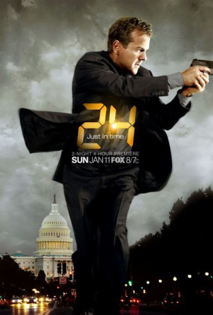

")
 
 IMDB-Wertung: 8.4 / 10
IMDB-Wertung: 8.4 / 10  Metascore:
Metascore: 
Die Handlung des Thrillers spielt sich in 24 Stunden ab. Jack Bauer, Chef einer Anti-Terror-Einheit, erfährt, dass seine Tochter entführt wurde und muss gleichzeitig einen Anschlag auf den Präsidentschaftskandidaten vereiteln. Dazu bleiben ihm nur 24 Stunden. Diese 24 Stunden sind exakt auf 24 Episoden verteilt, teilweise mit Split-Screen, um die sich überstürzenden Ereignisse zeitgenau zu dokumentieren.
Jahr: 2001
Dauer: 44 Minuten
FSK: 16
Land: USA Studio: Fox NetworkTonspuren: AAC2.0 - ,
Untertitel:
Auflösung: SD (720x404) Größe: 582 MB
Genre: TV-Serie, Action, Drama, Mystery, Thriller
Regisseur: Jon Cassar, Brad Turner, Milan Cheylov, Bryan Spicer,  Stephen Hopkins
Stephen Hopkins
Drehbuch: Robert Cochran, Joel Surnow, Howard Gordon, Michael Loceff, Evan Katz
Soundtrack:
Darsteller:
 Kiefer Sutherland als Jack Bauer
Kiefer Sutherland als Jack Bauer Mary Lynn Rajskub als Chloe O'Brian
Mary Lynn Rajskub als Chloe O'Brian Dennis Haysbert als President David Palmer
Dennis Haysbert als President David Palmer Elisha Cuthbert als Kim Bauer
Elisha Cuthbert als Kim Bauer James Morrison als Bill Buchanan
James Morrison als Bill Buchanan Reiko Aylesworth als Michelle Dessler
Reiko Aylesworth als Michelle Dessler Jude Ciccolella als Mike Novick
Jude Ciccolella als Mike Novick Glenn Morshower als Aaron Pierce
Glenn Morshower als Aaron Pierce D.B. Woodside als Wayne Palmer
D.B. Woodside als Wayne Palmer Cherry Jones als President Allison Taylor
Cherry Jones als President Allison Taylor Gregory Itzin als President Charles Logan
Gregory Itzin als President Charles Logan Louis Lombardi als Edgar Stiles
Louis Lombardi als Edgar Stiles Sarah Clarke als Nina Myers
Sarah Clarke als Nina Myers Bob Gunton als Ethan Kanin
Bob Gunton als Ethan Kanin Carlo Rota als Morris O'Brian
Carlo Rota als Morris O'Brian Eric Balfour als Milo Pressman
Eric Balfour als Milo Pressman Xander Berkeley als George Mason
Xander Berkeley als George Mason Sarah Wynter als Kate Warner
Sarah Wynter als Kate Warner Jean Smart als Martha Logan
Jean Smart als Martha Logan Leslie Hope als Teri Bauer
Leslie Hope als Teri Bauer Peter MacNicol als Tom Lennox
Peter MacNicol als Tom Lennox James Badge Dale als Chase Edmunds
James Badge Dale als Chase Edmunds John Boyd als Arlo Glass
John Boyd als Arlo Glass Freddie Prinze Jr. als Cole Ortiz
Freddie Prinze Jr. als Cole Ortiz Marisol Nichols als Nadia Yassir
Marisol Nichols als Nadia Yassir Frank John Hughes als Tim Woods
Frank John Hughes als Tim Woods Paul Schulze als Ryan Chappelle
Paul Schulze als Ryan Chappelle Zachary Quinto als Adam Kaufman
Zachary Quinto als Adam Kaufman Janeane Garofalo als Janis Gold
Janeane Garofalo als Janis Gold Katee Sackhoff als Dana Walsh
Katee Sackhoff als Dana Walsh William Devane als James Heller
William Devane als James Heller Jeffrey Nordling als Larry Moss
Jeffrey Nordling als Larry Moss Michelle Forbes als Lynne Kresge
Michelle Forbes als Lynne Kresge Geoff Pierson als President John Keeler
Geoff Pierson als President John Keeler Mykelti Williamson als Brian Hastings
Mykelti Williamson als Brian Hastings Arnold Vosloo als Habib Marwan
Arnold Vosloo als Habib Marwan Zeljko Ivanek als Andre Drazen
Zeljko Ivanek als Andre DrazenDatei: X:\HD-Serien\24\24 S01\24 S01E01.mkv seit 19.11.2015
Festplatte: HD Serien(A-H)
 Es gibt insgesamt 182 Filme in der Gruppe 'HD-Serien'
Es gibt insgesamt 182 Filme in der Gruppe 'HD-Serien'